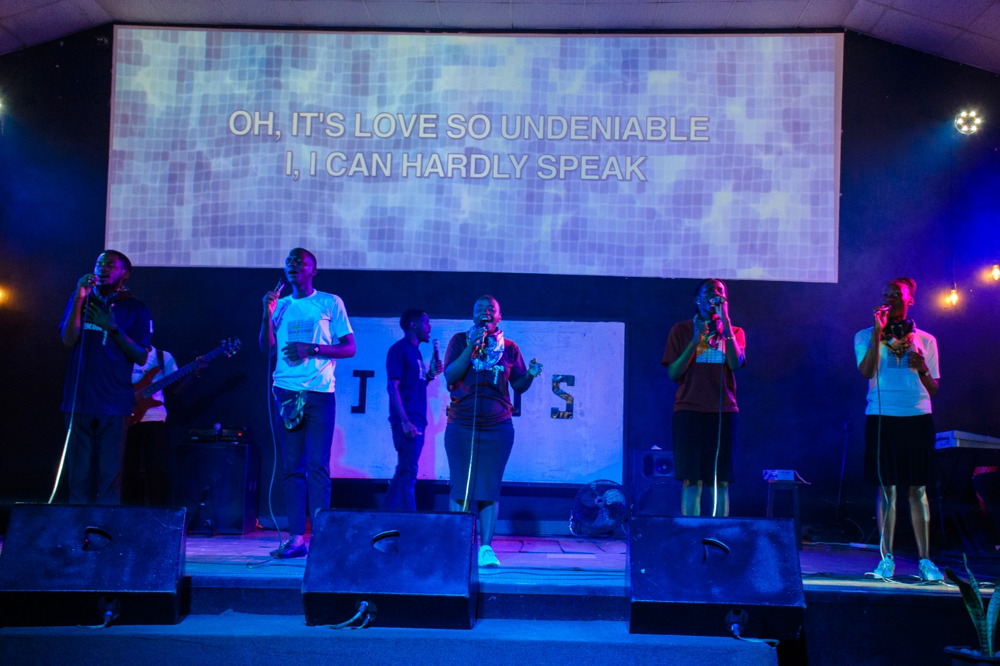
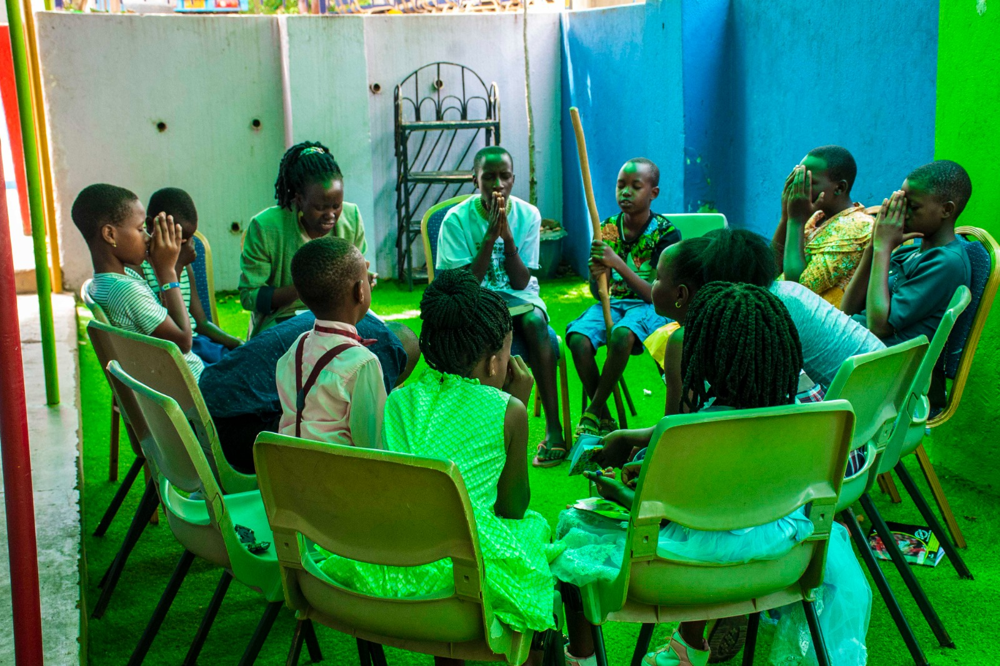

Our Ministries
Connecting, Serving, and Growing Together
We offer a variety of ministries that provide opportunities for fellowship, service, and spiritual growth. Whether you're looking to deepen your faith, connect with others, or serve the community, there's a place for you here.

iworship Ministry
Engage in Bible studies, prayer groups, and fellowship with other adults.
Learn More
imedia Ministry
Empowering the next generation through faith-based activities and community.
Learn More
iCare Ministry
Supporting families with programs, counseling, and activities for all ages.
Learn More

Get Involved
Join one of our ministries and make a difference in our community and beyond.
Join a Ministry